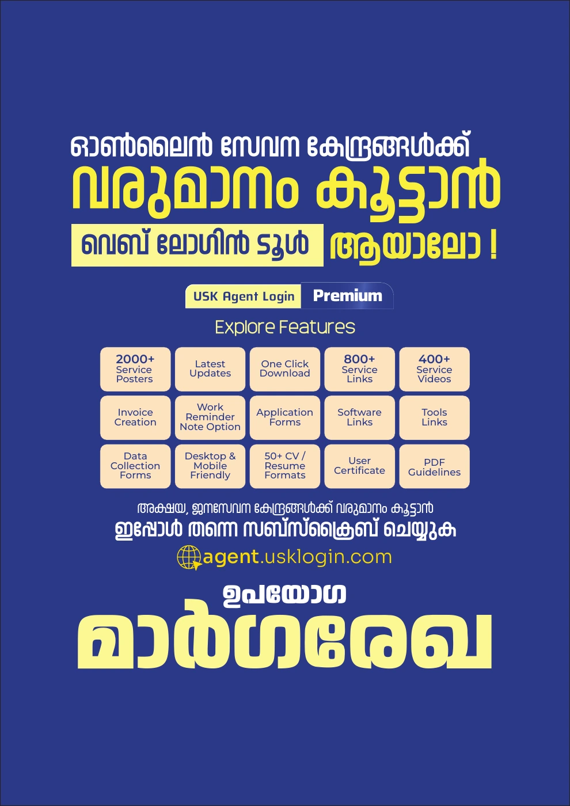
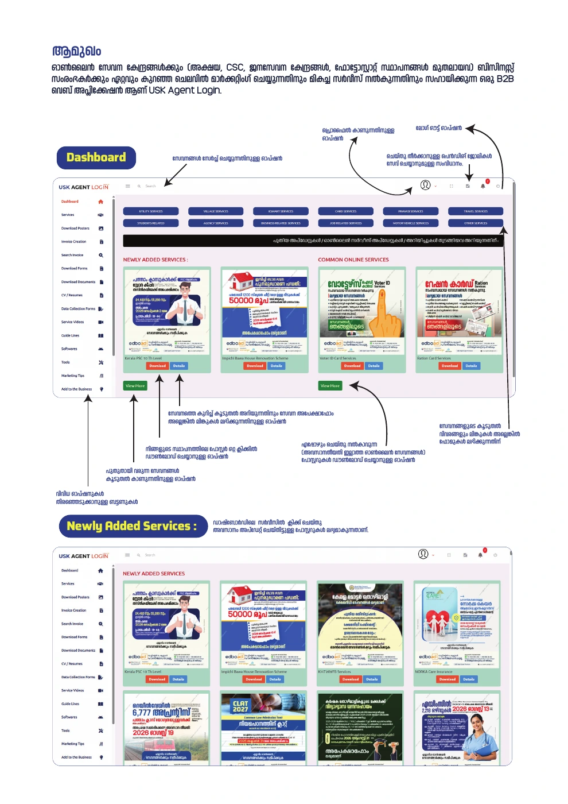
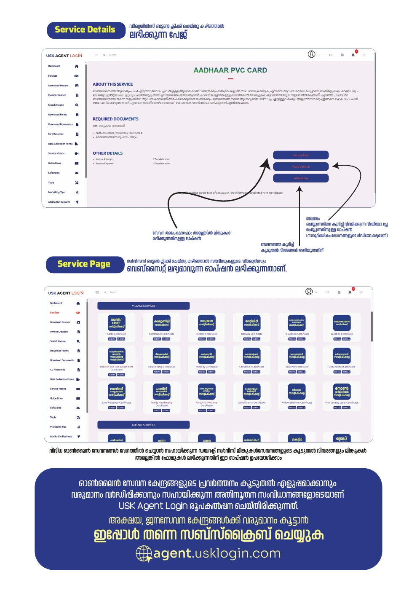
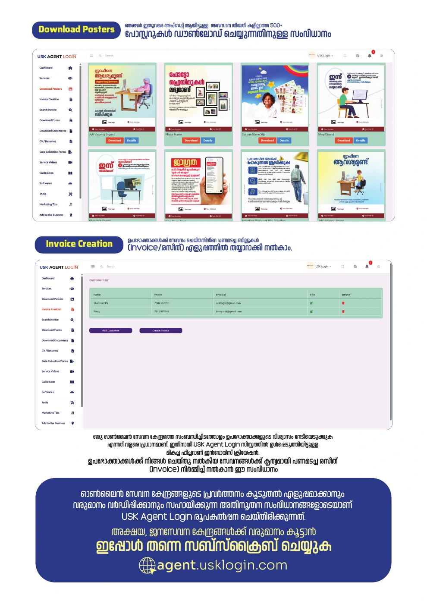
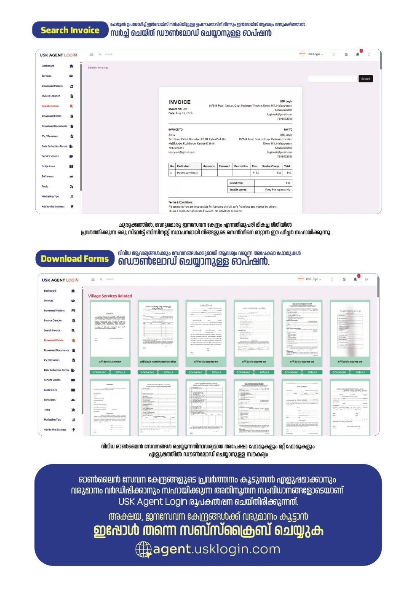
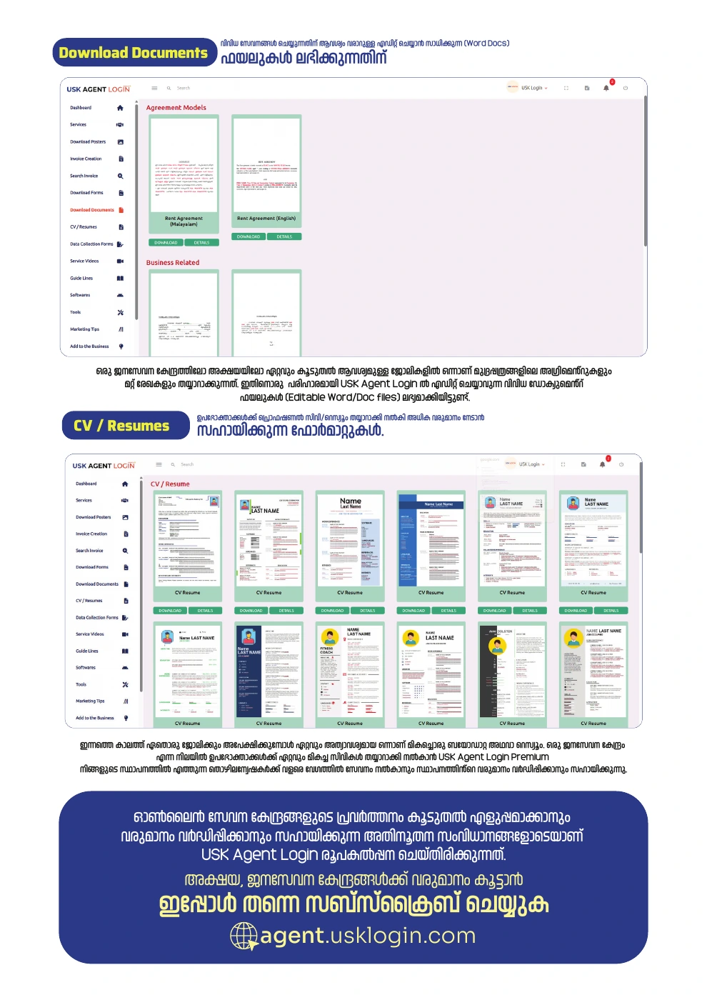
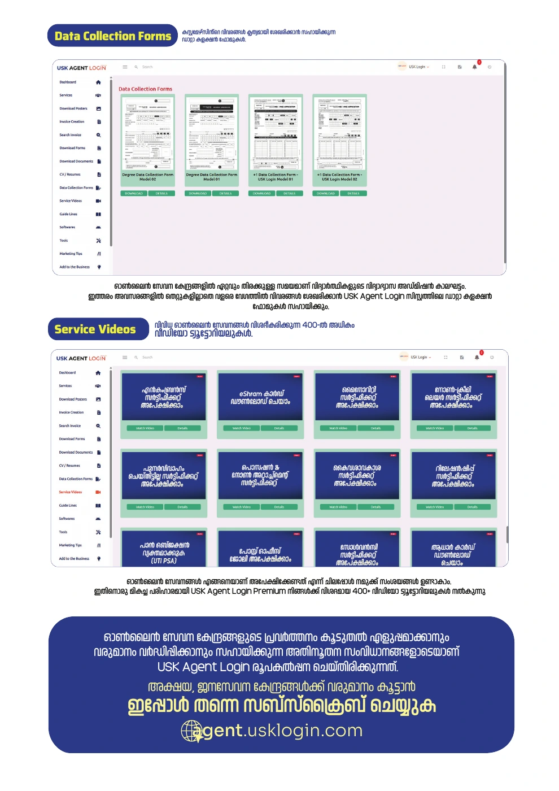
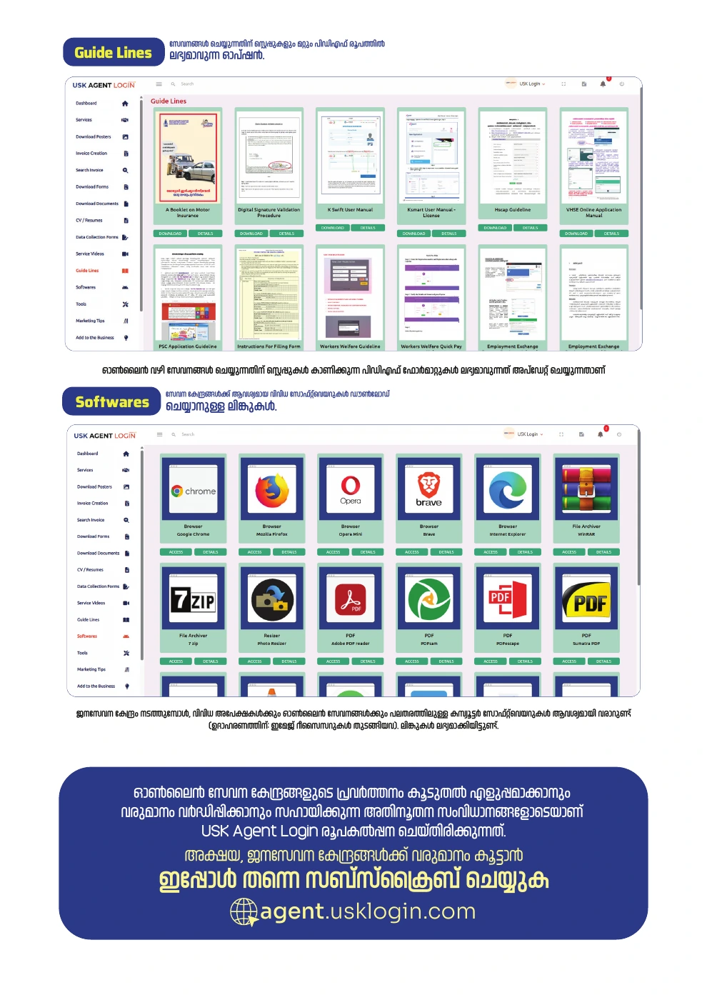
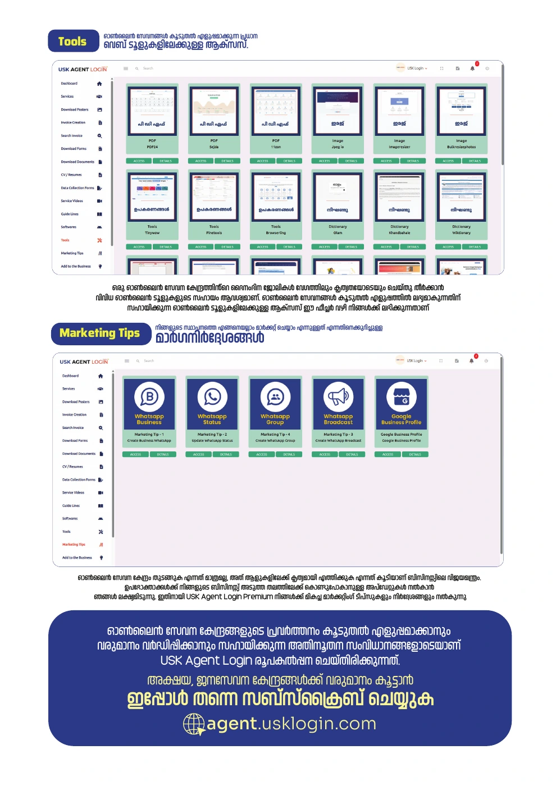
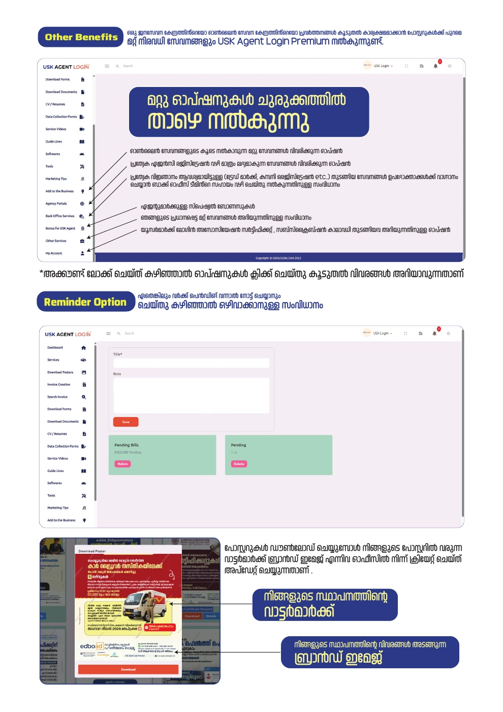

USK AGENT LOGIN · HELP CENTRE
User guideline
Learn how to use USK Agent Login with original screenshots from the supplied PDF and a clear explanation of each section.
The screenshots are reproduced from the supplied Malayalam PDF. Your current login interface may look slightly different.
PDF page 1 / 11
Premium overview
Explore the main features of USK Agent Login. The first page of the PDF introduces posters, service links, video tutorials, forms, invoices and other tools.

Enlarge image ↗PDF page 2 / 11
Dashboard & new services
Use dashboard search to find services. The top controls provide profile, logout and pending-work options. Newly Added Services shows recent posters. Use Download for your branded poster and Details to open service information.

Enlarge image ↗PDF page 3 / 11
Service details & service page
Open Details to read about a service. Choose the available application-form or service-link option, and use the video option to understand the process. The Services page brings together service information and direct links.

Enlarge image ↗PDF page 4 / 11
Poster downloads & invoice creation
Choose available general-service posters in Download Posters. Use Invoice Creation to prepare a payment receipt for a service provided to a customer. The image below shows both sections.

Enlarge image ↗PDF page 5 / 11
Invoice search & application forms
Use Search Invoice to find and download a previously issued invoice when a customer needs it again. Download Forms provides application forms and other forms required for services.

Enlarge image ↗PDF page 6 / 11
Documents & CV / Resume
Download Documents provides editable Word / Doc files that you can adapt with the required details. Use the formats in CV / Resumes to prepare professional CVs for customers.

Enlarge image ↗PDF page 7 / 11
Data collection forms & videos
Use Data Collection Forms to collect customer information in an organised way, including during busy admission periods. Service Videos provides tutorials explaining how to carry out different services.

Enlarge image ↗PDF page 8 / 11
PDF guidelines & software
Guide Lines provides PDF instructions describing the steps for services. The Softwares section lists download links for software used by service centres.

Enlarge image ↗PDF page 9 / 11
Web tools & marketing tips
Find online tools for everyday work in Tools. Read Marketing Tips for guidance on reaching more people with your business and its services.

Enlarge image ↗PDF page 10 / 11
Other benefits & work reminders
Explore options for additional services, agency services, back-office support, bonuses, certificates and subscription information. Record pending work in Reminder and remove it when completed. The guideline explains that the office prepares and updates the watermark and business-information brand image used on posters.

Enlarge image ↗PDF page 11 / 11
Subscription & assistance
The final PDF page contains plan, renewal and contact information. Prices shown are those printed in the document; confirm current prices and terms on the payment page or through WhatsApp.